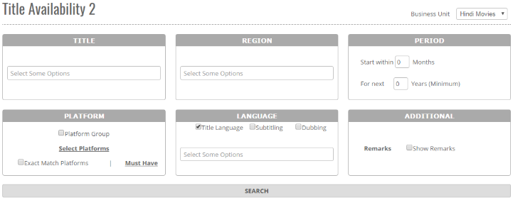


	<section>
		<article>
			<h2>Title Availability 2<span></span></h2>
			<div>
				<p></p>

				<p>This report focuses on the availability of Title for all regions except Indian Theatrical Territory. Report is accessible to the user who has rights for this particular report.</p>

				<p><b>Business Unit</b> - If there are multiple business units, then as per selection of Business unit, respective data will be generated.</p>

				<div class="triangle-border top">				
					
				</div>

				<p><b>Title</b> - Availability results is based on Title selection. If no title is selected than result will be generated for all titles of the selected business unit. It is mandatory to select atleast one criteria among Title, Region and Platform.</p>

				<p><b>Region</b> - This option is an additional refinement of search criteria using Country or Territory Group. If this option is not selected then report will be generated for all available regions.</p>

				<p><b>Period</b> - This option presents user with two fields. By default, both the values will be 0.</p>

				<p>First is 'Start within <u>specified</u> months' which means that the available right period start date should fall within the specified period. If start within is 0 then available right period should start from current date and if start within is 3 months then available right period start date should fall within 3 months from current date.</p>

				<p>Second is 'For next <u>specified</u> years (Minimum)' which means that the rights for a title/s should be available for minimum period specified by the user from available start date. If the value is 0 then result will be displayed for a title even if it is available for a day from available start date and if value is 1 then the result will be displayed only when the title is available for minimum 1 year from available start date.</p>

				<p><b>Platform-</b> This option is available to the user to generate a report for the selected platforms only. If this option is not selected then report will be generated for all available platforms. User can select platforms from predefined platform groups. User will tick the checkbox against Platform Group option and he will be presented with a drop down containing all the pre-defined platform groups in the system.</p>

				<p>There are two more additional options in this report namely Exact Match Platforms and Must Have. If user selects Exact Match Platforms then result will only be generated when all the selected platforms are available and if user selects Must have then a popup will open containing platforms selected in 'Select Platforms' option or from selected platform group.</p>

				<p><b>Language</b> - This option is an additional refinement of search criteria using Title Language or Subtitling or Dubbing. User can select one or all the options to generate data for the selected option. Selecting at least one option is mandatory.  User can select a language or language group in the drop down and based on selection of Title Language or Subtitling or Dubbing , result will be generated.</p>

				<p><b>Show Remarks</b> - This option is by default not selected. If user wants to see Deal remarks along with Title's Availability then the user should select the option and perform search. Report will be generated with Deal General, Rights, and Restriction Remarks etc.</p>
				
			</div>
		</article>
	</section>